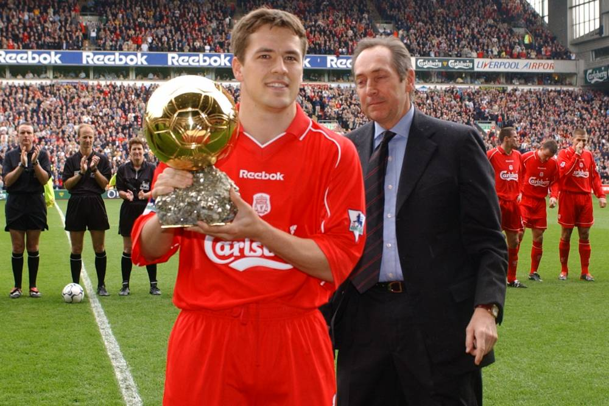
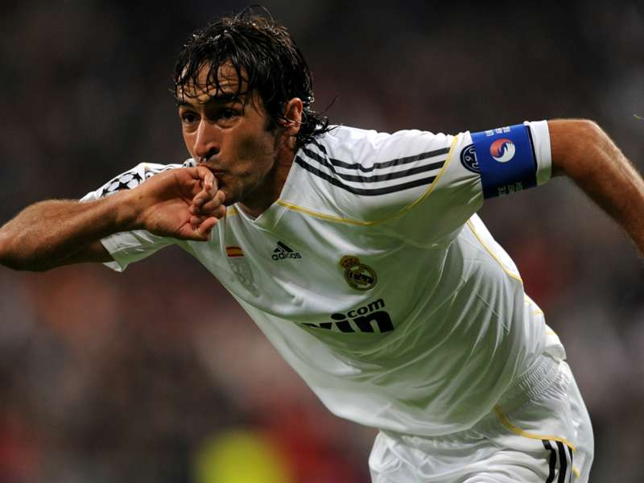
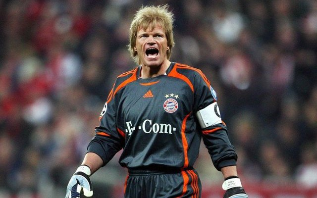

Michael OWEN - 2001

- L'attaquant à réaction
Adulé des supporters de Liverpool,
Owen
remporte le premier Ballon d'Or en 2001.
Nationalité : Anglaise
Né le 14 décembre 1979, à Chester (ANG)
Taille : 1,73
Poids : 70 kg
Poste : attaquant
Clubs : Liverpool FC (1996-2004) et Real Madrid (depuis 2004).
Palmarès : Supercoupe d'Europe 2001 ; Coupe de l'UEFA 2001 ; Coupe d'Angleterre 2001 ; Coupe de la Ligue d'Angleterre 2003 ; Charity Shield 2001 ; meilleur buteur du Championnat d'Angleterre 1998 (18 buts) et 1999 (18)
Bilan en club : 482 matchs, 222 buts
Bilan en équipe d'Angleterre : 67 matches A, 28 buts (1998-2005)
Bilan en phase finale de Coupe du monde : 2 participations, 9 matches, 4 buts (1998-2002)
Palmarès Ballon d'Or : vainqueur en 2001
Classement du Ballon d’Or France Football 2001 :
Michael Owen (Angleterre / Liverpool)

Raúl González Blanco (Espagne / Real Madrid)

Oliver Kahn (Allemagne / Bayern Munich)
Retour à l'accueil
 Michael OWEN - 2001
Michael OWEN - 2001